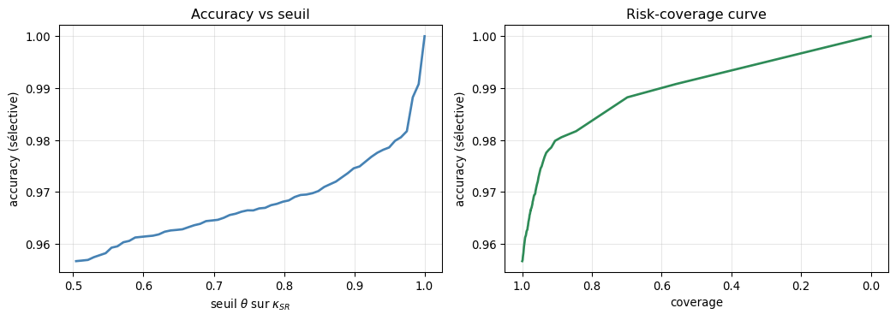
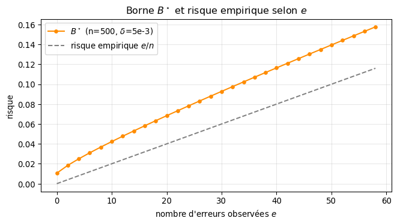
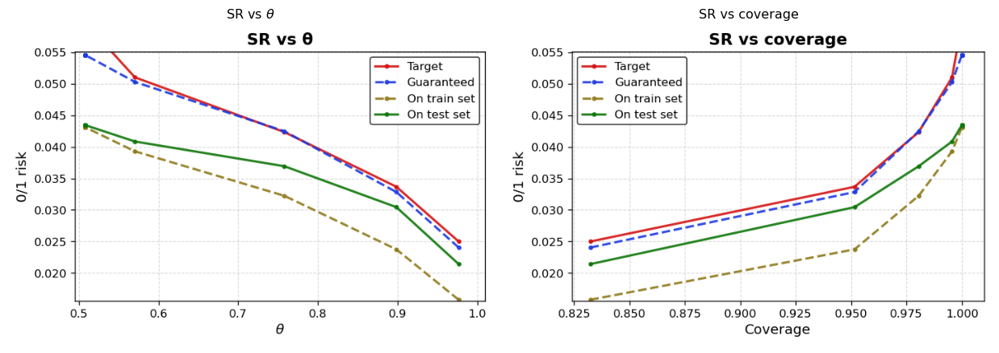

Run : density__resnet18_pretrained-pos3__20260429-134215
Images dans le sgp_set : 7179
kappa ∈ [0.5042, 1.0000]
Accuracy à coverage = 1 : 95.67 %Abstention — Du score softmax au seuil garanti
Softmax Response (SR) et algorithme SGR par dichotomie
Partie I — Pourquoi s’abstenir
1. Le problème : un classifieur qui se trompe parfois
Un classifieur entraîné sur les mammographies RSNA atteint typiquement ~95 % d’accuracy à coverage = 1 (il prédit sur toutes les images). Le reste — les 5 % d’erreurs — n’est pas réparti uniformément : la plupart des images sont prédites avec une grande confiance et bien classées, et un petit nombre concentre les erreurs.
L’idée de l’abstention (ou selective classification) est de laisser le modèle refuser de répondre sur les images douteuses, pour ne renvoyer un diagnostic que quand on a une garantie sur la qualité de la prédiction.
2. Le cadre formel
On suit le cadre de Geifman & El-Yaniv (2017), Selective Classification for Deep Neural Networks (NeurIPS). Un classifieur sélectif est une paire :
\[ (f, g) \quad \text{avec} \quad f : \mathcal{X} \to \mathcal{Y}, \quad g : \mathcal{X} \to \{0, 1\} \]
- \(f\) est le classifieur de base (le ResNet, par exemple) ;
- \(g\) est la fonction de sélection : \(g(x) = 1\) on prédit, \(g(x) = 0\) on s’abstient.
Sur cette paire on définit deux quantités centrales :
\[ \text{coverage} = \phi(f, g) = \mathbb{E}[g(X)] \qquad\qquad \text{selective risk} = R(f, g) = \frac{\mathbb{E}[\ell(f(X), Y)\, g(X)]}{\mathbb{E}[g(X)]} \]
Le coverage est la proportion d’images sur lesquelles on accepte de prédire. Le selective risk est le taux d’erreur conditionnel aux images acceptées.
Plus on s’abstient, plus le risque baisse — mais le coverage aussi. L’objectif de SGR est de trouver le meilleur compromis avec une garantie probabiliste.
Partie II — La fonction de confiance : Softmax Response (SR)
3. Construire \(g\) à partir d’un score de confiance
En pratique on choisit une fonction de confiance \(\kappa : \mathcal{X} \to \mathbb{R}\) et un seuil \(\theta\), puis on pose :
\[ g_\theta(x) = \mathbb{1}\{\kappa(x) \geq \theta\} \]
Plus \(\theta\) est grand, plus on est sélectif (coverage ↓, risque attendu ↓).
4. Softmax Response
Pour un réseau qui renvoie un vecteur de logits \(z(x) \in \mathbb{R}^K\), la softmax response (SR) est simplement le maximum du vecteur softmax :
\[ \kappa_{\text{SR}}(x) = \max_{k} \, \text{softmax}(z(x))_k \]
C’est la confiance que le réseau donne à sa propre prédiction. Geifman & El-Yaniv montrent que, malgré sa simplicité, SR est un excellent ranker — c’est-à-dire que trier les images par \(\kappa_{\text{SR}}\) décroissant trie aussi (approximativement) des plus sûres vers les plus douteuses.
# abstention_module/preprocessing.py — prepare_sgp_dico()
softmax_values = F.softmax(batch_preds / T, dim=1)
softmax_responses = torch.max(softmax_values, dim=1)[0] # = kappa SR
_, predicted = torch.max(batch_preds, 1) # = y_predÀ la sortie de l’inférence on dispose d’un DataFrame sgp_set à trois colonnes : y_true, y_pred, kappa. Toute la suite (calibration du seuil, tracé des courbes) ne manipule plus que ce DataFrame.
5. À quoi ressemble la courbe SR → accuracy ?
Les deux courbes ci-dessous sont calculées à la volée à partir du sgp_set du run (le DataFrame kappa, y_pred, y_true). Pour chaque seuil \(\theta\) on calcule l’accuracy sur les images acceptées et le coverage correspondant. C’est la même logique que abstention_module/threshold.py, qui sauvegarde ce graphique sous accuracy_vs_sr_threshold.png dans le dossier du run.

À gauche : quand on monte \(\theta\), on garde les images les plus sûres, et l’accuracy sélective monte. À droite : la même information vue comme un compromis risque/couverture.
Le problème : cette courbe est empirique, mesurée a posteriori sur le set de calibration. Rien ne garantit que le seuil \(\theta\) choisi tiendra sur des nouvelles données. C’est exactement ce que résout SGR.
Partie III — SGR : choisir \(\theta\) avec garantie probabiliste
6. La question posée par SGR
L’algorithme SGR (Selection with Guaranteed Risk, Geifman & El-Yaniv 2017, Algorithm 1) répond à la question suivante :
Étant donné un risque cible \(r^\star\) et un niveau de confiance \(\delta\), trouver le seuil \(\theta^\star\) le plus petit possible (donc le coverage le plus grand possible) tel que :
\[\Pr\big[\, R(f, g_{\theta^\star}) \leq r^\star \,\big] \geq 1 - \delta\]
L’idée centrale : on ne peut pas calculer \(R(f, g_\theta)\) exactement, mais on peut calculer une borne supérieure \(B^\star\) valable avec probabilité \(\geq 1 - \delta\). On cherche alors le \(\theta\) le plus petit tel que \(B^\star \leq r^\star\).
Quelle est notre confiance ?
Le paramètre \(\delta\) est défini une fois pour toutes dans le module :
# abstention_module/sgp_utils.py
DELTA = 5e-3Soit \(\delta = 0{,}005\), ce qui correspond à un niveau de confiance \(1 - \delta = 0{,}995\) — 99{,}5 %. Autrement dit, sur 200 calibrations indépendantes du seuil \(\theta^\star\) sur des sets de calibration différents, on s’attend à ce qu’au plus une voie le vrai risque dépasser la cible \(r^\star\).
C’est la même valeur que celle utilisée par Geifman & El-Yaniv dans leurs expériences. Elle peut être abaissée (par ex. \(\delta = 10^{-3}\), confiance 99{,}9 %) au prix d’une borne \(B^\star\) plus pessimiste — donc d’un \(\theta^\star\) plus haut et d’un coverage plus faible.
7. La borne \(B^\star\) (inversion de la queue binomiale)
Sur l’ensemble accepté de taille \(n_\theta\) avec \(e\) erreurs observées, le risque empirique est \(\hat r = e / n_\theta\). La borne supérieure \(B^\star\) est le plus grand taux d’erreur “vrai” \(b\) compatible avec ces observations au niveau \(\delta\) :
\[ B^\star(\delta, e, n_\theta) \;=\; \sup\Big\{ b \in [0, 1] \;:\; \sum_{j=0}^{e} \binom{n_\theta}{j} b^j (1-b)^{n_\theta - j} \;\geq\; \delta \Big\} \]
On résout ça numériquement par dichotomie sur \(b\) (B_star dans abstention_module/math_utils.py). Quelques cas limites :
- \(e = 0\) (aucune erreur observée) : \(B^\star = 1 - \delta^{1/n_\theta}\)
- \(e = n_\theta\) : \(B^\star = 1\) (non-informatif, on ne peut rien dire)
# abstention_module/math_utils.py — B_star
def B_star(delta, e, n, b1=0, b2=1):
if (e == n) or (n == 0): return 1
if e == 0: return 1 - delta ** (1 / n)
b = (b1 + b2) / 2
if abs(binom_sum(b, e, n) - delta) < eps: return b
elif binom_sum(b, e, n) <= delta - eps: return B_star(delta, e, n, b1, b)
else: return B_star(delta, e, n, b, b2)binom_sum(b, e, n) est la probabilité d’observer au plus \(e\) erreurs sur \(n\) tirages Bernoulli(\(b\)) i.i.d. Quand cette probabilité passe en dessous de \(\delta\), on a trouvé une valeur de \(b\) “trop grande” pour être plausible : la borne supérieure est juste avant.

La borne (orange) est toujours au-dessus du risque empirique (pointillé). L’écart, c’est le “prix” de la garantie à 99{,}5 % : il décroît quand \(n\) augmente.
8. L’algorithme : recherche dichotomique sur \(\theta\)
La borne \(B^\star\) est monotone décroissante en \(\theta\) : plus on est sélectif, plus le set accepté contient des images “sûres”, moins il y a d’erreurs, plus la borne est petite. On peut donc faire une recherche par dichotomie sur \(\theta\) pour trouver le plus petit \(\theta\) tel que \(B^\star \leq r^\star\).
L’algorithme (Algorithm 1 du papier) est essentiellement :
theta_min, theta_max = 0.5, 1
pour k1 itérations :
theta ← (theta_min + theta_max) / 2
n_theta, e_theta ← compter sur le set accepté Sn[kappa ≥ theta]
b ← B_star(delta / (2^k1 - 1), e_theta, n_theta)
si b < r* → theta_max = theta # on peut se permettre d'être moins sélectif
sinon → theta_min = theta # il faut être plus sélectif
retourner thetaPourquoi \(\delta / (2^{k_1} - 1)\) et pas juste \(\delta\) ? Parce qu’on évalue \(B^\star\) à \(k_1\) valeurs différentes de \(\theta\). Pour qu’aucune des bornes ne soit fausse avec probabilité \(\geq 1 - \delta\), on applique une union bound : chaque évaluation doit tenir au niveau \(\delta / (2^{k_1} - 1)\).
Le nombre d’itérations \(k_1\) est choisi pour qu’avec une grille équivalente de taille \(k_2\), on ait \(2^{k_1} \geq k_2 + 1\) — c’est le minimum pour que la dichotomie soit au moins aussi précise que la version greedy. Dans le code :
# abstention_module/sgp_utils.py — paramètres
K2 = 50
K1 = int(np.log(K2 + 1) / np.log(2)) + 1 # ⇒ K1 = 6
DELTA = 5e-39. La fonction sgp_dicho annotée
# abstention_module/sgp_utils.py — sgp_dicho (extrait)
def sgp_dicho(delta, r_star, Sn, metric, theta_min=0.5, theta_max=1, k1=K1):
n = Sn.shape[0]
for _ in range(k1):
theta = (theta_min + theta_max) / 2
selected = Sn.loc[Sn.kappa >= theta]
e = emp_errs_count(selected, loss=metric)
b = B_star(delta / (2**k1 - 1), e, selected.shape[0])
if (selected.shape[0] == 0) or (e == selected.shape[0]):
b = 1 # cas dégénéré
if (b == 1) or (e == 0 and b >= r_star):
return {} # cible inatteignable
if b < r_star: theta_max = theta # ↓ être moins sélectif
else: theta_min = theta # ↑ être plus sélectif
return {"theta_star": theta, "bound": b, "delta": delta,
"coverage": selected.shape[0] / n,
"emp_metric": emp_metric(selected, metric=metric)}Deux cas où la fonction renvoie {} (échec) :
b == 1: la borne reste non-informative (set accepté vide ou que des erreurs) → impossible de garantir quoi que ce soit.e == 0 and b ≥ r_star: aucune erreur observée mais le set est trop petit pour que la garantie probabiliste descende sous \(r^\star\). Il faudrait plus de données.
Partie IV — Démo sur un run réel
10. Les figures produites par le run
Les deux figures suivantes sont générées par abstention_module/abstention_demo_SR.py et sauvegardées dans le dossier du run. Elles balayent l’algorithme SGR sur un ensemble de cibles \(r^\star \in [0{,}025, \; 0{,}45]\), à confiance fixée \(\delta = 5\cdot 10^{-3}\), avec la dichotomie comme moteur de recherche.

Chaque point du nuage = une cible \(r^\star\) pour laquelle la dichotomie a réussi à trouver un \(\theta^\star\). On y lit : la borne \(B^\star\) (par construction sous \(r^\star\)), le risque mesuré sur train et sur test (non vu pendant la calibration), et la couverture obtenue. La validité du test set — c’est ce qu’on attend : avec probabilité \(\geq 99{,}5\,\%\) le risque test reste sous la cible.
11. La même chose en tableau
Calibration SGR (δ = 5e-3, dichotomie, métrique 0/1) :
r* θ* bound cov. train risk test cov. test
0.100 0.5078 0.055 99.9% 4.35% 100.0%
0.070 0.5078 0.055 99.9% 4.35% 100.0%
0.050 0.5859 0.049 99.1% 3.98% 99.4%
0.030 0.9297 0.030 93.1% 2.73% 93.8%
0.020 0.9766 0.024 82.4% 2.14% 83.2%Lecture du tableau :
- r* : cible de risque qu’on souhaite garantir.
- θ* : seuil renvoyé par la dichotomie sur le set de calibration.
- bound : borne \(B^\star\) obtenue — par construction \(\leq r^\star\).
- cov. train / cov. test : proportion d’images sur lesquelles on prédit.
- risk test : risque empirique mesuré sur le set de test (jamais vu pendant la calibration). Il devrait être \(\leq r^\star\) avec probabilité \(\geq 1 - \delta\).
Plus on demande un risque garanti faible, plus \(\theta^\star\) monte, plus la couverture chute : c’est le compromis fondamental de l’abstention.
Références
Geifman, Y. & El-Yaniv, R. (2017). Selective Classification for Deep Neural Networks. NeurIPS. arXiv:1705.08500 — papier de référence pour SR (§4) et SGR (Algorithm 1, §5).
El-Yaniv, R. & Wiener, Y. (2010). On the foundations of noise-free selective classification. JMLR 11. — Cadre théorique original (notions de coverage et selective risk).
Annexes : fichiers du module
| Fichier | Rôle |
|---|---|
abstention_module/preprocessing.py |
Construction du sgp_set (κ, y_pred, y_true) à partir d’un dataloader |
abstention_module/math_utils.py |
B_star, binom_sum — la borne probabiliste |
abstention_module/sgp_utils.py |
sgp_dicho, sgp_greedy_search, sgp_at_targets — algorithmes SGR |
abstention_module/threshold.py |
Courbe accuracy vs seuil SR (reproduction du papier) |
abstention_module/abstention_demo_SR.py |
Script de démo qui produit les plots SR vs θ et SR vs coverage |
12. Comment l’utiliser à l’inférence
Une fois \(\theta^\star\) calibré :
C’est tout. Le seuil \(\theta^\star\) encapsule toute la garantie probabiliste.